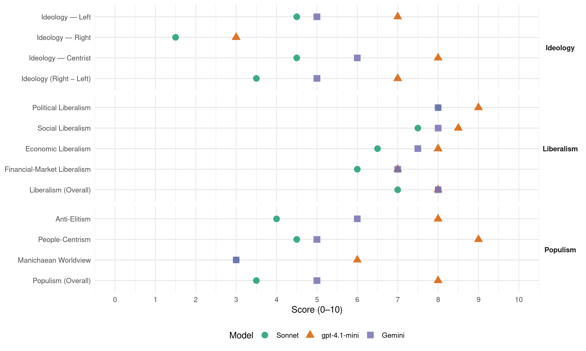

Labour (United Kingdom, 1997)
manifesto_id 51320_199705
Get full text: This site shows derived annotations and short verbatim quotes only. The full manifesto text is © Manifesto Project / WZB — obtain it via manifesto-project.wzb.eu using the manifesto_id above.
Headline scores
| Dimension | Sonnet | gpt-4.1-mini | Gemini |
|---|---|---|---|
| Populism (Overall) | 3.5 | 8.0 | 5.0 |
| Anti-Elitism | 4.0 | 8.0 | 6.0 |
| People-Centrism | 4.5 | 9.0 | 5.0 |
| Manichaean Worldview | 3.0 | 6.0 | 3.0 |
| Ideology (Right − Left) | 3.5 | 7.0 | 5.0 |
| Liberalism (Overall) | 7.0 | 8.0 | 8.0 |
| Political Liberalism | 8.0 | 9.0 | 8.0 |
| Social Liberalism | 7.5 | 8.5 | 8.0 |
| Economic Liberalism | 6.5 | 8.0 | 7.5 |
| Financial-Market Liberalism | 6.0 | 7.0 | 7.0 |
Evidence per dimension
Economic Liberalism
Gemini · score 7.0 · verified · chunk 1
“promote dynamic and competitive business and industry”
We will provide stable economic growth with low inflation, and promote dynamic and competitive business and industry at home and abroad
Gemini · score 8.0 · verified · chunk 2
“open up markets to competition”
priority for the British presidency. We will open up markets to competition; pursue tough action against unfair state aids;
gpt-4.1-mini · score 8.0 · verified · chunk 1
“Government and industry must work together to achieve key objectives aimed at enhancing the dynamism of the market, not undermining it”
…Programme: a new centre and centre-left politics In each area of policy a new and distinctive approach has been mapped out, one that differs both from the solutions of the old left and those of the Conservative right. This is why new Labour is new. We believe in the strength of our values, but we recognise also that the policies of 1997 cannot be those of 1947 or 1967. More detailed policy has been produced by us than by any opposition in history. Our direction and destination are clear. The old left would have sought state control of industry. The Conservative right is content to leave all to the market. We reject both approaches. Government and industry must work together to achieve key objectives aimed at enhancing the dynamism of the market, not undermining it…
gpt-4.1-mini · score 8.0 · verified · chunk 2
“open up markets to competition; pursue tough action against unfair state aids”
Rapid completion of the single market: a top priority for the British presidency. We will open up markets to competition; pursue tough action against unfair state aids; and ensure proper enforcement of single market rules. This will strengthen Europe’s competitiveness and open up new opportunities for British firms.
Sonnet · score 6.0 · verified · chunk 1
“enhancing the dynamism of the market”
Government and industry must work together to achieve key objectives aimed at enhancing the dynamism of the market, not undermining it
Sonnet · score 7.0 · verified · chunk 2
“open up markets to competition”
We will open up markets to competition; pursue tough action against unfair state aids; and ensure proper enforcement
Financial-Market Liberalism
Gemini · score 7.0 · verified · chunk 1
“reform the Bank of England to ensure that decision-making”
We will reform the Bank of England to ensure that decision-making on monetary policy is more effective, open, accountable
gpt-4.1-mini · score 7.0 · verified · chunk 1
“We will reform the Financial Services Act so that the scandal of pension mis-selling - 600,000 pensions mis-sold and only 7,000 people compensated to date - will not happen again”
…Older citizens We value the positive contribution that older people make to our society, through their families, voluntary activities and work. Their skills and experience should be utilised within their communities. That is why, for example, we support the proposal to involve older people as volunteers to help children learn in pre-school and after-school clubs. We will reform the Financial Services Act so that the scandal of pension mis-selling - 600,000 pensions mis-sold and only 7,000 people compensated to date - will not happen again. Too many people in work, particularly those on low and modest incomes and with changing patterns of employment, cannot join good-value second pension schemes. Labour will create a new framework - stakeholder pensions - to meet this need…
Sonnet · score 6.0 · verified · chunk 1
“reform the Financial Services Act”
We will reform the Financial Services Act so that the scandal of pension mis-selling - 600,000 pensions mis-sold and only 7,000 people compensated to date - will not happen again
Sonnet · score 6.0 · verified · chunk 2
“Inflation and interest rates as low as possible”
NO RISE IN INCOME TAX RATES, CUT VAT ON HEATING TO 5 PER CENT AND INFLATION AND INTEREST RATES AS LOW AS POSSIBLE
Political Liberalism
Gemini · score 8.0 · verified · chunk 1
“decentralise political power throughout the United Kingdom”
We will clean up politics, decentralise political power throughout the United Kingdom and put the funding of political parties on a proper and accountable basis
Gemini · score 8.0 · verified · chunk 2
“advocate of human rights and democracy”
standing up for its own interests; an advocate of human rights and democracy the world over; a reliable and powerful ally
gpt-4.1-mini · score 9.0 · verified · chunk 1
“We will by statute incorporate the European Convention on Human Rights into UK law to bring these rights home and allow our people access to them in their national courts”
…Real rights for citizens Citizens should have statutory rights to enforce their human rights in the UK courts. We will by statute incorporate the European Convention on Human Rights into UK law to bring these rights home and allow our people access to them in their national courts. The incorporation of the European Convention will establish a floor, not a ceiling, for human rights. Parliament will remain free to enhance these rights, for example by a Freedom of Information Act…
gpt-4.1-mini · score 9.0 · verified · chunk 2
“an advocate of human rights and democracy the world over”
Britain will be strong in defence; resolute in standing up for its own interests; an advocate of human rights and democracy the world over; a reliable and powerful ally in the international institutions of which we are a member; and will be a leader in Europe.
Sonnet · score 8.0 · verified · chunk 1
“Freedom of Information Act, leading to more open government”
We are pledged to a Freedom of Information Act, leading to more open government, and an independent National Statistical Service
Sonnet · score 8.0 · verified · chunk 2
“Greater openness and democracy in EU institutions”
Greater openness and democracy in EU institutions with open voting in the Council of Ministers and more effective scrutiny
Liberalism (Overall)
Gemini · score 8.0 · verified · chunk 1
“incorporate the European Convention on Human Rights”
We will by statute incorporate the European Convention on Human Rights into UK law to bring these rights home
Gemini · score 8.0 · verified · chunk 2
“open up markets to competition”
priority for the British presidency. We will open up markets to competition; pursue tough action against unfair state aids;
gpt-4.1-mini · score 8.0 · verified · chunk 1
“We will by statute incorporate the European Convention on Human Rights into UK law to bring these rights home and allow our people access to them in their national courts”
…Real rights for citizens Citizens should have statutory rights to enforce their human rights in the UK courts. We will by statute incorporate the European Convention on Human Rights into UK law to bring these rights home and allow our people access to them in their national courts. The incorporation of the European Convention will establish a floor, not a ceiling, for human rights. Parliament will remain free to enhance these rights, for example by a Freedom of Information Act…
gpt-4.1-mini · score 8.0 · verified · chunk 2
“an advocate of human rights and democracy the world over”
Britain will be strong in defence; resolute in standing up for its own interests; an advocate of human rights and democracy the world over; a reliable and powerful ally in the international institutions of which we are a member; and will be a leader in Europe.
Sonnet · score 7.0 · verified · chunk 1
“independent commission on voting systems”
An independent commission on voting systems will be appointed early to recommend a proportional alternative to the first-past-the-post system
Sonnet · score 7.0 · verified · chunk 2
“open up markets to competition”
We will open up markets to competition; pursue tough action against unfair state aids; and ensure proper enforcement
Anti-Elitism
Gemini · score 6.0 · verified · chunk 1
“an elite at the top increasingly out of touch”
system that gives the breaks to the few, to an elite at the top increasingly out of touch with the rest of us.
gpt-4.1-mini · score 8.0 · verified · chunk 1
“govern in the interest of the many, the broad majority of people who work hard, play by the rules, pay their dues and feel let down by a political system that gives the breaks to the few, to an elite at the top increasingly out of touch with the rest of us”
…faith in politics through a government that will govern in the interest of the many, the broad majority of people who work hard, play by the rules, pay their dues and feel let down by a political system that gives the breaks to the few, to an elite at the top increasingly out of touch with the rest of us. And I want, above all, to govern in a way that brings our country together…
Sonnet · score 5.0 · verified · chunk 1
“gives the breaks to the few, to an elite”
a political system that gives the breaks to the few, to an elite at the top increasingly out of touch with the rest of us
Sonnet · score 3.0 · verified · chunk 2
“the Tories are riven by faction”
Only Labour can be trusted to do this: the Tories are riven by faction. But there are formidable obstacles
Ideology — Centrist
Gemini · score 6.0 · verified · chunk 1
“political arm of none other than the British people”
We are a broad-based movement for progress and justice. New Labour is the political arm of none other than the British people as a whole.
gpt-4.1-mini · score 8.0 · verified · chunk 1
“In each area of policy a new and distinctive approach has been mapped out, one that differs from the old left and the Conservative right. This is why new Labour is new”
…Programme: a new centre and centre-left politics In each area of policy a new and distinctive approach has been mapped out, one that differs both from the solutions of the old left and those of the Conservative right. This is why new Labour is new. We believe in the strength of our values, but we recognise also that the policies of 1997 cannot be those of 1947 or 1967…
Sonnet · score 6.0 · verified · chunk 1
“new centre and centre-left politics”
Programme: a new centre and centre-left politics. In each area of policy a new and distinctive approach has been mapped out
Sonnet · score 3.0 · verified · chunk 2
“Britain deserves better”
WE HAVE PROMISED ONLY WHAT WE KNOW WE CAN DELIVER. BRITAIN DESERVES BETTER AND THE FOLLOWING FIVE ELECTION PLEDGES
Ideology — Left
Gemini · score 5.0 · verified · chunk 1
“tackle the division and inequality in our society”
how we build the industry and employment opportunities of the future; how we tackle the division and inequality in our society; how we care for
gpt-4.1-mini · score 7.0 · verified · chunk 1
“We have rewritten our constitution, the new Clause IV, to put a commitment to enterprise alongside the commitment to justice”
…The purpose of new Labour is to give Britain a different political choice: the choice between a failed Conservative government, exhausted and divided in everything other than its desire to cling on to power, and a new and revitalised Labour Party that has been resolute in transforming itself into a party of the future. We have rewritten our constitution, the new Clause IV, to put a commitment to enterprise alongside the commitment to justice. We have changed the way we make policy…
Sonnet · score 5.0 · verified · chunk 1
“tackle the division and inequality in our society”
how we tackle the division and inequality in our society; how we care for and enhance our environment
Sonnet · score 4.0 · verified · chunk 2
“combating global poverty and underdevelopment”
Labour will also attach much higher priority to combating global poverty and underdevelopment.
Ideology (Right − Left)
Gemini · score 5.0 · verified · chunk 1
“differs from the old left and the Conservative right”
In each area of policy a new and distinctive approach has been mapped out, one that differs from the old left and the Conservative right. This is why new Labour is new
gpt-4.1-mini · score 7.0 · verified · chunk 1
“In each area of policy a new and distinctive approach has been mapped out, one that differs from the old left and the Conservative right. This is why new Labour is new”
…Programme: a new centre and centre-left politics In each area of policy a new and distinctive approach has been mapped out, one that differs both from the solutions of the old left and those of the Conservative right. This is why new Labour is new. We believe in the strength of our values, but we recognise also that the policies of 1997 cannot be those of 1947 or 1967…
Sonnet · score 4.0 · verified · chunk 1
“differs from the old left and the Conservative right”
one that differs both from the solutions of the old left and those of the Conservative right. This is why new Labour is new
Sonnet · score 3.0 · verified · chunk 2
“combating global poverty and underdevelopment”
Labour will also attach much higher priority to combating global poverty and underdevelopment.
Ideology — Right
gpt-4.1-mini · score 3.0 · verified · chunk 1
“We oppose a European federal superstate. There are only three options for Britain in Europe. The first is to come out. The second is to stay in, but on the sidelines. The third is to stay in, but in a leading role”
…We will give Britain leadership in Europe Referendum on single currency Lead reform of the EU Retain Trident: strong defence through NATO A reformed United Nations Helping to tackle global poverty Britain, though an island nation with limited natural resources, has for centuries been a leader of nations. But under the Conservatives Britain’s influence has waned. With a new Labour government, Britain will be strong in defence; resolute in standing up for its own interests; an advocate of human rights and democracy the world over; a reliable and powerful ally in the international institutions of which we are a member; and will be a leader in Europe. Our vision of Europe is of an alliance of independent nations choosing to co-operate to achieve the goals they cannot achieve alone. We oppose a European federal superstate. There are only three options for Britain in Europe. The first is to come out. The second is to stay in, but on the sidelines. The third is to stay in, but in a leading role…
Sonnet · score 1.0 · verified · chunk 1
“firm control over immigration”
Every country must have firm control over immigration and Britain is no exception
Sonnet · score 2.0 · verified · chunk 2
“Retention of the national veto over key matters”
Retention of the national veto over key matters of national interest, such as taxation, defence and security
Manichaean Worldview
Gemini · score 3.0 · verified · chunk 1
“run for the many not the few”
I want a Britain that is one nation, with shared values and purpose, where merit comes before privilege, run for the many not the few, strong and sure of itself
gpt-4.1-mini · score 6.0 · verified · chunk 1
“People are cynical about politics and distrustful of political promises. That is hardly surprising. There have been few more gross breaches of faith than when the Conservatives under Mr Major promised, before the election of 1992, that they would not raise taxes, but would cut them every year”
…A new politics The reason for having created new Labour is to meet the challenges of a different world. The millennium symbolises a new era opening up for Britain. I am confident about our future prosperity, even optimistic, if we have the courage to change and use it to build a better Britain. To accomplish this means more than just a change of government. Our aim is no less than to set British political life on a new course for the future. People are cynical about politics and distrustful of political promises. That is hardly surprising. There have been few more gross breaches of faith than when the Conservatives under Mr Major promised, before the election of 1992, that they would not raise taxes, but would cut them every year; and then went on to raise them by the largest amount in peacetime history starting in the first Budget after the election…
Sonnet · score 4.0 · verified · chunk 1
“failed Conservative government, exhausted and divided”
the choice between a failed Conservative government, exhausted and divided in everything other than its desire to cling on to power
Sonnet · score 2.0 · verified · chunk 2
“tragedy of the Conservative years”
The tragedy of the Conservative years has been the squandering of Britain’s assets and the loss of Britain’s influence.
People-Centrism
Gemini · score 5.0 · verified · chunk 1
“The British people are a great people”
I believe in Britain. It is a great country with a great history. The British people are a great people. But I believe Britain can and must be better
gpt-4.1-mini · score 9.0 · verified · chunk 1
“New Labour is the political arm of none other than the British people as a whole. Our values are the same: the equal worth of all, with no one cast aside, fairness and justice within strong communities”
…New Labour The purpose of new Labour is to give Britain a different political choice: the choice between a failed Conservative government, exhausted and divided in everything other than its desire to cling on to power, and a new and revitalised Labour Party that has been resolute in transforming itself into a party of the future. We have rewritten our constitution… New Labour is the political arm of none other than the British people as a whole. Our values are the same: the equal worth of all, with no one cast aside, fairness and justice within strong communities. But we have liberated these values…
Sonnet · score 6.0 · verified · chunk 1
“run for the many not the few”
where merit comes before privilege, run for the many not the few, strong and sure of itself at home and abroad
Sonnet · score 3.0 · verified · chunk 2
“the people would have to say ‘Yes’”
then Parliament; and finally the people would have to say ‘Yes’ in a referendum.
Populism (Overall)
Gemini · score 5.0 · verified · chunk 1
“run for the many, the broad majority”
I want to renew faith in politics through a government that will govern in the interest of the many, the broad majority of people who work hard
gpt-4.1-mini · score 8.0 · verified · chunk 1
“govern in the interest of the many, the broad majority of people who work hard, play by the rules, pay their dues and feel let down by a political system that gives the breaks to the few, to an elite at the top increasingly out of touch with the rest of us”
…faith in politics through a government that will govern in the interest of the many, the broad majority of people who work hard, play by the rules, pay their dues and feel let down by a political system that gives the breaks to the few, to an elite at the top increasingly out of touch with the rest of us. And I want, above all, to govern in a way that brings our country together…
Sonnet · score 5.0 · verified · chunk 1
“govern in the interest of the many”
a government that will govern in the interest of the many, the broad majority of people who work hard, play by the rules
Sonnet · score 2.0 · verified · chunk 2
“tragedy of the Conservative years”
The tragedy of the Conservative years has been the squandering of Britain’s assets and the loss of Britain’s influence.
Social Liberalism